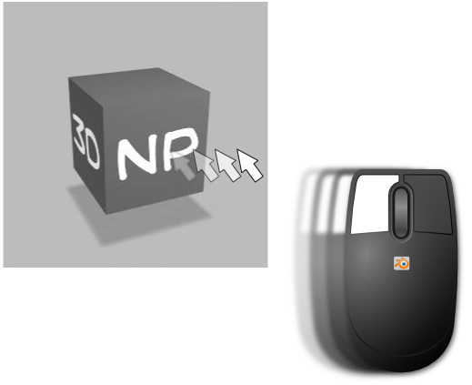

Descarga y contenido del ZIP
- Descarga desde la web del autor: www.thoro.de/page/3dnp-introduction-en
- Descarga directa desde aquí.
Una vez descargado el ZIP con todo lo relativo a 3DNP dentro hay cinco archivos (echamos un vistazo para una mejor comprensión, pero de todo lo que ahí aparece nosotros sólo manipularemos dos archivos):
- Carpeta Blender. Ahí está el .blend que crea todo lo necesario para disfrutar de 3DNP.
- Carpeta HTML. Incuye el archivo javascript llamado 3DNP_config.js, un archivo CSS con las hojas de estilo de los HTML, unas imágenes y un ejemplo de cada una de las tres formas que tenemos de ejecutar 3DNP desde el entorno web:
- 3DNP.html. Carga directamente las imágenes y deja lista la escena para ser rotada (de hecho la imagen comienza a rotar sola). El inconveniente es que el usuario no es avisado de que las imágenes se están cargando y puede frustrar el intento de navegación.
- 3DNP_click.html. Muestra el logo de 3DNP estático, y un enlace "click here to load", que es necesario ser activado por el navegante. Una vez cargada la escena se pone en movimiento a la espera de la navegación del usuario.
- 3DNP_ loader.html. Igual que la anterior pero no necesita ser ejecutada por el navegante. Se aprecia la barra de carga por lo que el usuario sabe si la escena está en condiciones de ser navegada o no. Igual que las anterores, una vez hecha la carga la secuencia se pone en movimiento a la espera de que el visitante comience la navegación.
- Logo de 3DNP.
- Condiciones de la licencia.
- PDF con un tutorial en inglés.
Importante
La carpeta principal descomprimida, con todas las subcapetas y archivos, debe permanecer tal y como la hemos descargado. Es muy importante que se mantenga toda la estructura para que las rutas relativas entre archivos no se rompan y deje de funcionar 3DNP.
Si ejecutamos el archivo 3DNP_html vemos el ejemplo que incorpora de fábrica e interactuamos con él pulsando el ratón y desplazando. Tiene algunas características como la rotación inicial que nosotros anularemos a su debido tiempo.
